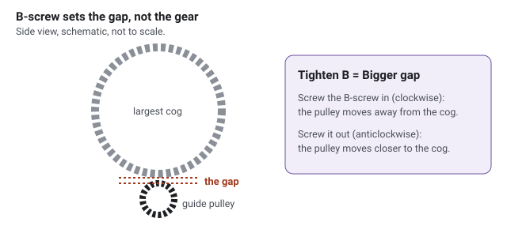
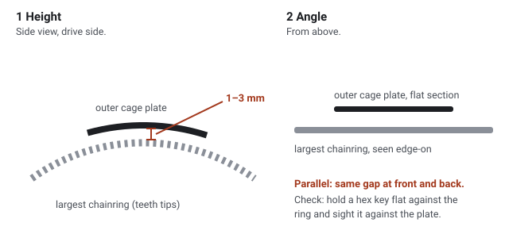

Derailleurs: fit and adjust, front and rear
One method for every cable-operated Shimano road or hybrid derailleur, with the SRAM differences, written for three jobs: a new Altus rear derailleur on Sophia's bike, the 105 5700 rear and front derailleurs moving to the Giant Defy, and the poorly shifting SRAM Rival on the Boardman.
1. How to use this guide
- Pick your bike in the bar at the top. Steps that apply to only one bike hide for the others. "All bikes" shows everything, and so does a print-out.
- Tick each step in the box on its right as you finish it. The page forgets the ticks when you close it.
- Each step ends with a green "You know it's right when" box. Do not move on until that check passes. That is what makes the result the same every time.
- Red boxes are safety. Purple boxes are memory hooks. Grey "Teacher's synthesis" boxes are where I combine the sources. Their words are mine, not a manufacturer's.
- How fine to work. Turn screws a quarter turn at a time unless a step says otherwise. A quarter turn is 90°, so the hex key moves from 12 o'clock to 3 o'clock. Turn barrels a quarter turn at a time too, or one click at a time where the barrel clicks. Gaps are in millimetres. A 5 mm hex key is 5 mm across its flats, so it doubles as a gauge. Tighten bolts with a torque wrench to the number given, in N·m (newton metres). Where the guide gives a range, set the wrench to the middle of it, for example 9 N·m for 8–10 and 6 N·m for 5–7 (teacher's synthesis). The one exception is the front derailleur on the carbon Defy. Set exactly 5 N·m there until Giant gives a figure (section 8).
- Words. The guide explains each part's name the first time it appears, and the parts map shows them all. The course glossary has the full list.
- Ask me. If anything is unclear on the day, such as a part that does not look like the drawing or a number that does not fit, ask your teacher (this agent) before guessing.

2. The whole method on one screen
Fit it. Then: small wall, wire, big wall, tune.
A wall is the stop a limit screw sets, the furthest the derailleur can travel that way. The word, and every hook on this page, is the teacher's own. The rules behind them come from the sources.
- Fit it. Bolt it on in the right place, which means a straight hanger at the rear and the right height and angle at the front.
- Small wall. Set the limit screw for the small gear, which is the rear's smallest cog or the front's small ring.
- Wire. Fit the chain and clamp the cable.
- Big wall. Set the limit screw for the big gear, which is the rear's largest cog or the front's big ring.
- Tune. At the rear, set the B-screw and then the barrel adjuster. At the front, set the barrel adjuster using the trim click.
With the cable slack, a spring parks each derailleur against its small-gear wall. So that wall is the only one you can set before the cable goes on, and the cable cannot be set until both walls exist. Shimano's own sheets follow this order for the 105 5700 rear and front and for the Altus.12,13,17 The phrase "small wall, wire, big wall, tune" is mine.
"High wire, low bee, barrel roll." Set the H screw, then wire (fit the chain and cable), then set the L screw, the B-screw and the barrel adjuster, then roll (ride and check).
| Hook | What it means |
|---|---|
| H is for High gear, the fast one | The H screw guards the fastest gear, which is the smallest cog at the rear and the big ring at the front. L guards the climbing gear, the largest cog at the rear and the small ring at the front.11,3 |
| Tighten a limit screw: its wall closes in | Screwing a limit screw in stops the derailleur sooner; unscrewing lets it travel further.11 |
| Unscrew to climb | Unscrewing a barrel adjuster tightens the cable, which moves the chain towards the bigger cog at the rear and the bigger ring at the front.11,12,21 |
| Tighten B = Bigger gap | Screwing the B-screw in moves the guide pulley away from the cogs.1 |
| Big-big plus one inch | For chain length, wrap the chain round the big ring and the largest cog, not through the derailleur, and add one inch. One inch is one inner-plate section plus one outer-plate section. Park gives this rule for largest cogs of 36 teeth or fewer.8 The Boardman's SRAM Rival 1 manual adds two inches instead (two inner and two outer links).21 |
| Cross the chain to set a front wall | Set the front small wall with the chain on the small ring and the largest cog. Set the front big wall on the big ring and the smallest cog.13 |
| Listen, look, push | This is the final proof. Listen for rattles in every gear. Look at the guide pulley under each end cog. On the largest cog, push the lever hard and check that nothing moves further in.1 |
3. Check these on your bikes first
The sources could not settle these points for your bikes. Each takes a minute with the bike in front of you.
Sophia's bike
Checked on the bike on 17 October 2026. It has a hanger, a 7-speed cassette and one chainring, so there is no front derailleur. The shifter is a twist grip with no barrel adjuster of its own, so the barrel on the derailleur is the only one.20
- Hanger or claw? Look at the right rear dropout (the slot the wheel axle sits in). If there is a threaded tab for the derailleur bolt, either part of the frame or a separate flat plate, that is a hanger. If the old derailleur has its own bracket (a "claw") that hooks round the dropout and is held on by the wheel's axle nut, that is a claw. To tell them apart, undo the derailleur's mounting bolt with the wheel in place. If the derailleur comes away and a threaded tab stays on the frame, it is a hanger; if the bolt goes into a bracket that only comes off when the axle nut is undone, it is a claw (teacher's synthesis). The Altus RD-M310 is made only for a hanger.18 On a claw frame, a separate claw adapter (a stand-alone claw bracket for the new derailleur to bolt into) is needed. Take the old derailleur to a shop and match it (teacher's synthesis).2
- 7 or 8 speed? Count the cogs on the back wheel. The RD-M310 suits both, because Shimano lists it as 8/7-speed.18,19
- Which shifter? A trigger with two levers (Shimano Rapidfire Plus) has its own barrel adjuster where the cable leaves it. A twist grip (Revoshift) or a thumb lever has none, so the barrel on the derailleur is the only one.20 With two barrels, either one does the job.11
- How many chainrings? Count the toothed rings at the pedals. With one ring there is no front derailleur, and section 8 does not apply. With two or three, the bike also has a front derailleur. Section 8's order works for it, but its numbers are the 105's, so ask your teacher for the right ones before touching it. With three rings, use the middle ring for the barrel step in section 7.1
Giant Defy and the 105 5700 parts
Checked on the bike on 17 October 2026. The Defy has a bolt-on front derailleur tab, so it needs the braze-on FD-5700-F, and your front derailleur is that clamp-free version. The one thing left to check is that the tab's bolt is tight.
- Front derailleur mount. Read the code on your front derailleur. FD-5700-F bolts to a tab on the frame (a "braze-on" mount); FD-5700-B has its own round clamp (a "band").15 Then look at the Defy's seat tube just above the cranks. Giant sells a bolt-on front derailleur tab listed for every 2013 Defy, which suggests a tab, but no Giant page says so.27 If the frame has a tab, you need the -F version; if it is a plain round tube, you need -B in the right size (28.6, 31.8 or 34.9 mm).13 On a bare frame the tab may not be fitted yet. Check it is there and its bolt is tight, and ask the Giant dealer for that bolt's torque at the same time as the derailleur's.
- Front cable adjuster. Look for a barrel adjuster at the down-tube cable stop. If there is none (likely on an Advanced with internal cables), buy Shimano's inline adjuster, SM-CA70 or SM-CA50, which fits in the front housing.14 The tune step in section 8 needs one.
- Which Defy? The 2013 carbon Defy came as the Defy Composite or the Defy Advanced. The Advanced runs the gear cables inside the frame; the Composite's parts lists show no internal guides, so its cables probably run outside.28 Shimano warns against internal routing for the 5700 rear derailleur because of cable friction.12 On an Advanced frame, use new Shimano SP41 housing and cable and expect to work harder at the cable step.
- Rear hanger. The Defy's hanger is a separate bolt-on part, Giant 271200.26 If it is bent or its threads are damaged, replace it rather than straighten it twice (teacher's synthesis, after Park Tool's note that hangers bent repeatedly can break4).
Boardman
Checked on the bike on 17 October 2026. The derailleur says Rival 1. It has two barrel adjusters, one on the handlebar shifter and one on the derailleur, and either one does the job.11
- Confirm it is a Rival 1. The 2016 Boardman Hybrid Pro had SRAM Rival 1 with one 44-tooth chainring and an 11-speed, 10–42-tooth cassette.29 A long-cage Rival with a 42-tooth cog can only be a Rival 1.23 Look for "Rival 1" on the derailleur and for a Cage Lock button on the cage.
- The shifter must match. Rival 1 uses SRAM's "Exact Actuation" cable pull.23 SRAM labels its flat-bar triggers for it Exact Actuation. SRAM's mountain-bike 11-speed triggers are "X-Actuation" and do not match.24,25 If the trigger has ever been replaced, check its label.
- Where is the barrel adjuster? The Boardman has two, on the trigger and on the derailleur, and sections 7 and 9 use them. SRAM says a barrel is "either on the rear derailleur or more commonly on the shifter".22 On another bike, follow the gear cable from the trigger to the derailleur. Look for a knurled (ridged) tube where the cable leaves the trigger, part-way along the housing, or where the housing meets the derailleur. If there is none, a shop can fit an inline adjuster in the housing before you start (teacher's synthesis).
4. Four things adjustment cannot fix
Do these before turning any screw. If one fails, no amount of adjusting will make the gears shift well.1,11,22 This is also the order for finding the Boardman's fault.
- The hanger is straight
Stand behind the bike with the chain on a middle cog. The two pulleys should hang exactly one under the other, and the chain should run straight up into the cog above, parallel with the cogs.11 This catches only an obvious bend. SRAM says a hanger "can't be eyeballed" and needs a gauge.22 Shifting that works on one chainring but not the other often points to a bent hanger.11
SafetyA bent hanger can steer the derailleur into the spokes. Sheldon Brown says that if you are lucky the derailleur breaks, and if not, it takes spokes with it.11 That can lock the back wheel. If the hanger looks even slightly off, have a shop check it with a hanger gauge such as the Park Tool DAG.4
- The chain is not worn out
Use a chain checker (a gauge that drops into the chain and reads its wear). Each bike has one figure. Replace the chain on Sophia's bike and the Defy at 0.75% (Park Tool, 10-speed and fewer), and on the Boardman at 0.5% (Park Tool, 11-speed).9 SRAM allows 0.8% on its own checker.21 This guide uses Park's stricter figure because a chain costs less than the cassette a worn one wears out (teacher's synthesis).
Without a checker, lay a ruler along the chain with one pin (the rivets joining the links) exactly on the 0 mark. At the 12-inch mark there should be another pin exactly on the line. If that pin is 1/16 inch or more past the line, replace the chain.9 That is about 0.5%, so on Sophia's bike and the Defy the ruler is stricter than the checker, which errs on the safe side.
- The cable runs freely
"More often than not, shifting problems are due not to any problem with the derailers, but to excessive friction in the cables."11,10 Look for frayed cable, kinked or cracked housing (the outer tube), and a missing ferrule (the metal end cap on each end of each piece of housing). Housing should be as short as it can be while still running straight into each stop, with no sharp bends.5 New cable and housing is cheap, so when in doubt, replace both (teacher's synthesis).
- The parts match
The shifter, derailleur, chain and cassette must all have the same number of speeds. A Shimano 8-speed rear derailleur also works on 7-speed.19 Keep the 105 5700 parts together as one 10-speed group. On the Boardman, the trigger must be an Exact Actuation one.23
Count teeth too, because a cog or ring too big for the derailleur can snag it. The Altus RD-M310 takes a largest cog of 28–34 teeth.18 The 105 RD-5700 takes a largest cog of 28 teeth at most. On its short cage (SS) the two chainrings may differ by 16 teeth at most, or 22 on the medium GS cage.12,15 The 105 FD-5700 needs a big ring of 50–56 teeth.15
5. Tools
- Hex keys (Allen keys). Shimano uses 5 mm for the mounting and cable bolts. SRAM Rival 1 uses 5 mm for the mount, 4 mm for the cable and 3 mm for the limit and B-screws.12,21
- Small Phillips screwdriver for Shimano limit screws.1
- Torque wrench reading about 2–12 N·m. You need one for the carbon Defy (teacher's synthesis).
- Inline barrel adjuster (Shimano SM-CA70 or SM-CA50) for the Defy's front cable if its cable stop has no adjuster, and for the Boardman if section 3 found no barrel.14
- Cable cutter that cuts housing cleanly, plus ferrules and inner-cable end caps.5
- Chain tool and the right joiner: a Shimano reinforced connecting pin for the 105 chain, or a quick link.12 SRAM's PowerLock is single use.21
- Chain checker, a repair stand or another way to hold the back wheel off the ground so the cranks turn freely, a rag, and a phone for photos.
6. Rear derailleur: remove and fit
- Photograph the old one
Take photos from behind and from the side. They should show how the chain threads through the cage and where the B-screw sits against the hanger.2
- Release the cable, then the chain
Shift to the smallest cog, clicking the release lever until no clicks are left. Cut off the cable's end cap, loosen the cable fixing bolt and pull the cable out of the derailleur. Open the chain at its quick link, or push out a pin with the chain tool.2
On the Rival 1, push the cage forward and press the Cage Lock button first. This holds the cage and takes the spring tension off the chain.21
- Unbolt it
Undo the mounting bolt with the hex key square in the bolt, supporting the derailleur as it comes free.2 On a claw-type frame, take the wheel out and undo the claw's bolt instead.2
- Check the hanger and its thread
With the derailleur off, look at the hanger from behind. Run the bolt in by hand. It should turn easily. If it binds, stop, because the thread needs a shop's tap or, on the Defy, a new hanger.2,26
- Bolt the new one on
Prepare the bolt thread (see the bike notes below). Hold the derailleur body rotated back so the B-screw clears the hanger's tab, start the bolt straight by hand, then let the body swing forward until the B-screw rests on the tab.2 Shimano warns not to let the tab bend the B-screw as you fit it.12 Tighten to the torque below.
Shimano (Altus RD-M310, 105 RD-5700). Tighten to 8–10 N·m with a 5 mm hex key.12,16 Park Tool suggests a little threadlocker or at least some grease on the thread.2
SRAM Rival 1. Tighten to 10–12 N·m with a 5 mm hex key, and put no grease on the bolt or hanger threads. The B-adjust washer must sit flush against the hanger with no gap.21
You know it's right whenThe derailleur does not rock on the bolt, and the B-screw rests on the hanger's tab, not beside it.
- Now adjust it
Do not ride yet. Every new or moved derailleur needs the full adjustment in the next section.2
7. Rear derailleur: adjust ("High wire, low bee, barrel roll")
The order is Shimano's for the 105 5700 and the Altus: high limit, cable, low limit, B-tension, indexing.12,17 Lift the back wheel off the ground so you can turn the cranks by hand. Each step shows the gear to be in, with the front rings on the left (small, big) and the rear cogs on the right (smallest to largest). On a bike with one front ring, use that ring.

- H, the small wall
big ring · smallest cog
The cable must be off or slack. On a bike already cabled, such as the Boardman, release the shifter fully, screw the barrel adjuster fully in, then loosen the cable fixing bolt so the cable hangs slack. Park warns that a tight cable, not the H screw, can be what is holding the derailleur.1 On a new fit the chain is not on yet, and that is fine. Look from behind and turn the H screw a quarter turn at a time until the guide pulley's centre sits directly under the outer face of the smallest cog.12 Screwing H in moves the pulley inward, and unscrewing it lets the pulley go further out.
If the screws are not marked, turn one while watching the derailleur. In this gear, the one that moves it is H.1
You know it's right whenLooking from behind, the guide pulley's centre is lined up under the smallest cog's outer face, as in the drawing. If the chain is already on, turn the cranks too. The chain runs quietly on the smallest cog and does not rub the next cog in. Park Tool says that if two settings sound equally quiet, you should choose the tighter one.1 On a new fit, the quiet-running check comes at the end of the next step.
- Wire (chain, then cable)
Chain length. For a new chain, or a chain moving to a different bike, wrap the chain round the big ring and the largest cog, not through the derailleur, and pull it snug. Where the ends meet, add one inch, which is one inner-plate section plus one outer-plate section. Park calls this "two rivets" and Shimano says "Add 2 links".8,12 Then thread it through the derailleur as in your photos and join it.
105. The 10-speed chain (CN-5701) has a front and a back face. Join it with a Shimano reinforced connecting pin, and never cut it where a reinforced pin already is.12 Moving the 105 to the Defy means re-sizing the chain for the new frame.
Rival 1. SRAM's 1x rule adds two inner and two outer links (two inches). Keep the Cage Lock engaged while you thread the chain. Release it by rotating the cage forward, then guiding it back by hand to the unlocked position, because the spring brings it back fast.21
Cable. Release the shifter fully so it sits in its smallest-cog position.
Altus. On a Rapidfire Plus trigger, press the release lever at least 7 times.16 On a twist grip such as Sophia's (Shimano's is called Revoshift), turn it to the top gear position.17
105 lever (ST-5700). Press the small inner lever (lever B) at least 9 times. Feed the new cable in through the hole under the rubber hood until its head seats fully in the lever's hook. Pull the cable while working the lever. If you feel it pull, the head is seated.14,7 Use Shimano SP41 housing, and grease it only with Shimano's special shift-cable grease. Do not cover the cable holes with bar tape.14
Screw the barrel adjuster fully in, then out one full turn, so it has room to work both ways. Use whichever barrel the cable has, on the derailleur, the shifter or in the housing. Section 3 says where yours are. With two, give each one the same treatment, fully in and then out one turn.1,21 If the cable has no barrel anywhere, stop and fit an inline adjuster, because you cannot do the tune step without one (teacher's synthesis). If the cable is still clamped from before, loosen the fixing bolt first. Lay the cable in the groove under the fixing bolt, pull it taut by hand and tighten the bolt.12
Altus cable bolt: 5–7 N·m.17
RD-5700 cable bolt: 6–7 N·m.12
Rival 1 cable anchor bolt: 4–5 N·m, 4 mm hex key.21
Take up the stretch. Shift up and down through the gears a few times, or hold the derailleur and work the lever, so the housing beds into its ferrules. Slack will appear. Loosen the bolt, pull the cable taut again and re-tighten.5,12 Cut the cable about 30 mm past the bolt and crimp on an end cap.6
You know it's right whenWith the shifter fully released, the chain still sits on the smallest cog. When you turn the cranks, it runs quietly without rubbing the next cog in, which proves the H setting. If it rubs, turn H a quarter turn now. One click moves the derailleur. The cable lies in its groove under the bolt.1
- L, the big wall
small ring · largest cog
Shift one cog at a time towards the largest while turning the cranks. If the chain will not reach the largest cog, unscrew L a quarter turn at a time until it does. Then set L so the guide pulley's centre is directly under the centre of the largest cog.12,21
You know it's right whenThe chain sits quietly on the largest cog. Push the shift lever hard, or push the derailleur inward by hand, and watch the cage. It must not move further in.1
Safety, the one setting that can hurtAn L screw set too loose lets the derailleur shift past the largest cog into the spokes, "with disastrous results".11 It can stop the back wheel dead. Never skip the push check. On Sophia's bike, do it yourself before every handover after work on the gears.
- B, the gap
small ring · largest cog

The B-gap runs from the largest cog to the guide pulley. Tighten B = Bigger gap.1 Shimano. Turn the cranks backwards. Turn the B-screw until the guide pulley is as close to the largest cog as it can be without touching it. Then shift to the smallest cog and check the pulley does not touch there either.12,17 This is the rule, and no millimetre figure overrides it (teacher's synthesis, after Shimano's "not so close that it touches"). If the pulley clatters on the teeth with a rattling tick as you pedal, it is touching and so too close. Screw B in a quarter turn (teacher's synthesis).12
Rival 1. Put the chain on the largest cog. Fit SRAM's chain-gap gauge on the guide pulley and turn the B-screw (3 mm hex) until the tallest teeth of the largest cog line up with the groove marked on the gauge.21 Without the gauge, SRAM's drawing shows 15 mm, but the manual does not say where to measure it from, so get the gauge if you can.
You know it's right whenThe guide pulley clears the largest cog when you pedal backwards, and shifts onto the largest cog are crisp. If you moved the B-screw a lot, recheck the next step afterwards.1
- Barrel, the tune
big ring · 2nd smallest cog

Unscrew to climb.11,21 This works for a barrel anywhere on the cable, whether at the derailleur, at the shifter or in the housing. Sheldon Brown says it does not matter which one you use.11 Shimano's indexing method (SIS), in plain words:12,17
- From the smallest cog, click once. The chain must move to the 2nd cog. If it does not, unscrew the barrel one full turn and try again.1
- On the 2nd cog, press the shift lever only until its free play is taken up. Stop before it clicks, and hold it there while turning the cranks.
- If it is right, the chain just touches the 3rd cog and makes a light rattle.
If the chain climbs onto the 3rd cog, screw the barrel in until it comes back to the 2nd.
If there is no noise at all, unscrew the barrel until the rattle starts. - Let go of the lever and turn the cranks. If it still rattles, screw the barrel in an eighth of a turn at a time until it runs quietly.
- Shift through every cog both ways and listen.
Rival 1, SRAM's fine-tuning. If shifts to a bigger cog are slow, unscrew the barrel one click at a time. If shifts to a smaller cog are slow, screw it in.21 That is "unscrew to climb" again. SRAM's own service article contradicts itself on this, but its manual and every other source agree with the rule here.22
You know it's right whenEvery click moves the chain exactly one cog without delay, both up and down, and no gear rattles when you stop shifting.1
- Roll, the proof (listen, look, push)
Listen. Run through every gear, both ways, on each chainring. Look. From behind, check that the guide pulley sits where the drawing shows on the smallest and largest cogs. Push. On the largest cog, push the lever hard and check that the cage does not move further in.1 Then take a short, slow test ride somewhere quiet, shifting under light pedalling.
Teacher's synthesis"Listen, look, push" is my name for Park Tool's three separate checks, done together as one final routine.
8. Front derailleur: fit and adjust (105 FD-5700 on the Defy)
Set up the rear derailleur first, because Sheldon Brown says not to adjust the front until the rear works properly.11 The order is the same as the rear: fit it, small wall, wire, big wall, tune. Every step comes from Shimano's sheet for this exact part, SI-5LW0B.13

- Fit it (height and angle)
Loosen the mounting bolt just enough to move the derailleur. With no cable attached, push the cage outward by hand until the outer plate is over the big ring. Set the height so the gap between the bottom of the outer plate and the tallest teeth of the big ring is 1–3 mm.13 Park Tool says 1–2 mm, about the thickness of a coin.3 Look down from above. The flat part of the outer plate must be directly over the big ring and parallel with it.13
Tighten the bolt with a 5 mm hex key and the torque wrench set to exactly 5 N·m. Shimano's range is 5–7 N·m, and Shimano says carbon frames may need less, so ask the frame maker.13 I found no published Giant figure for the 2013 Defy.
Safety on a carbon frameOver-tightening can crack a carbon frame, and you cannot repair a crack there at home. Use a torque wrench. Ask a Giant dealer for the Defy's figure before you tighten. Until then, set the wrench to exactly 5 N·m, Shimano's minimum, and no higher (teacher's synthesis).
- Small wall, the L screw
small ring · largest cog
Put the chain on the small ring and the largest rear cog ("cross the chain"). Turn the L (low) screw until the gap between the chain and the inner plate of the cage is 0–0.5 mm, as close as possible without rubbing.13 Screwing L in moves the cage outward, and unscrewing it lets the cage come in.
You know it's right whenWhen you turn the cranks, the chain does not rub the inner plate, and a sheet of card would only just fit between them.
- Wire, the front cable
On the left lever, press the small inner lever (lever b) once or more so the lever is at the small-ring position.14 Fit the cable as for the rear, with the head seated in the lever, SP41 housing and a ferrule on each end. The front cable needs a barrel adjuster. Use the one at the down-tube cable stop if the frame has it, or otherwise fit Shimano's inline adjuster (SM-CA70 or SM-CA50) in the housing (section 3).14 Screw it fully in, then out one turn. Pull the cable taut, lay it in its groove and tighten the fixing bolt to 6–7 N·m. Work the lever a few times, take up the slack that appears and re-tighten.13
You know it's right whenWith the lever released, the chain still sits on the small ring with the same small gap, and one push on lever a moves the cage out. Lever a is the main brake lever itself. Push it sideways, inward towards the bike's centre line, until it clicks. Do not pull it like a brake.14,30
- Big wall, the top (H) screw
big ring · smallest cog
Shift to the big ring and the smallest rear cog (crossed the other way). Turn the top screw (marked H) until the gap between the chain and the outer plate is 0–0.5 mm.13 If the chain will not climb onto the big ring at all, unscrew H a quarter turn and try again.
You know it's right whenThe chain runs on the big ring without rubbing, and the chain does not go over the outside of the big ring when you shift up hard.
SafetyAn H screw set too loose lets the chain come off the outside of the big ring, and the pedal then spins free under load. Park Tool says some rubbing in this gear under hard pedalling is normal frame flex, so don't loosen H to cure it.3
- Tune the cable tension with the trim click
big ring · largest cog
Shift to the largest rear cog with the chain on the big ring. Press the small lever (b) gently until it gives one light click, then stop. That is the "trim" position, which moves the cage a little inward to stop rubbing.13,14 Now turn the front barrel adjuster until the gap between the chain and the cage is 0–0.5 mm.13 Unscrewing the barrel tightens the cable and moves the cage outward.
Teacher's readingShimano's text says "chain guide" without naming the plate. In this gear the chain angles inward, so it comes closest to the inner plate. Watch that gap.
You know it's right whenWith the cranks turning, a gentle press of lever b moves the derailleur a little towards the small ring without dropping the chain. If it drops the chain onto the small ring, unscrew the top (H) screw an eighth of a turn and repeat this step.13
- Roll, the proof
Shift between the rings on several rear cogs, with the cranks turning and easing off the pedal pressure as you shift.11 If anything misbehaves, use Shimano's own fixes in the symptom table.
9. SRAM Rival 1: what is different, and diagnosing the Boardman
The Boardman is shifting poorly, not newly built, so work down SRAM's own list in this order, and stop at the first thing you find wrong.22
- Is everything tight?
Check the derailleur mounting bolt (10–12 N·m), the hanger bolts, the cassette and the wheel axle.21,22
- Hanger
See section 4, step 1. SRAM says a bent hanger "will still give you headaches" however much you adjust.22
- Wear
Check the chain first. SRAM says a worn chain has "the greatest effect" on shifting. Replace it at 0.5% (section 4, step 2).22 Then check the cassette (trouble on just one cog points there), the pulleys, and the cable and housing.22
- Parts match
The trigger must be Exact Actuation (section 3).
- Only now adjust
Work in this order, because each one moves the derailleur and so disturbs the next:
- Chain length. Do this only if the chain has been replaced or shortened. Re-size it by SRAM's rule (section 7, step 2). This is a fix, not a setting.
- Chain gap. Follow section 7, step 4, with SRAM's gauge.
- Barrel. Follow section 7, step 5, last.
This is the order of the Rival 1 manual (chain sizing, then chain gap, then shifting adjustments).21 SRAM's service article lists the barrel first.22 It goes last here because the other two move it (teacher's synthesis). If the cable or housing was replaced, run the whole of section 7 instead.
| Setting | Shimano (Altus, 105 5700) | SRAM Rival 1 |
|---|---|---|
| Mounting bolt | 8–10 N·m12 | 10–12 N·m, no grease21 |
| Cable bolt | 5–7 N·m (Altus), 6–7 N·m (105)17,12 | 4–5 N·m21 |
| Limit targets | The same for both. H puts the pulley centre under the smallest cog's outer edge, and L puts it under the largest cog's centre.12,21 | |
| Gap (B) | As close as possible without touching (no mm figure)12 | SRAM gauge, chain on largest cog21 |
| Chain length | Big-big + one inch8 | Big-big + two inches (2 inner + 2 outer links)21 |
| Chain wear limit | 0.75% (Park, 10-speed and fewer)9 | 0.5% (Park, 11-speed); SRAM allows 0.8% on its checker9,21 |
| Extras | – | Cage Lock. Rotate the cage forward and press the button to hold it. To release it, rotate the cage forward again, then guide it back by hand.21 |
10. Symptoms and fixes
Check the four things adjustment cannot fix first if a bike that used to shift well has gone wrong.11
| What you see or hear | Fix |
|---|---|
| Rear | |
| Slow or no shift to a bigger cog | Unscrew the barrel a quarter turn, or a full turn if it will not move at all (Park Tool)1,11 |
| Slow shift to a smaller cog, or one click jumps two cogs | Screw the barrel in a quarter turn1,11 |
| Rattle in a gear after shifting | Screw the barrel in a quarter turn1 |
| Will not reach the largest cog | L screw out a quarter turn, then redo the push check1 |
| Will not reach the smallest cog | Usually cable friction or a bent hanger, rarely the H screw11 |
| Pulley clatters on the largest cog | Screw the B-screw in1 |
| Shifts well on one chainring, badly on the other | Suspect a bent hanger11 |
| Trouble on just one cog | Suspect a worn cassette22 |
| Front (FD-5700, Shimano's chart)13 | |
| Chain falls off the outside (crank side) | Top (H) screw in, about a quarter turn |
| Hard to shift from small ring to big ring | Top (H) screw out, about an eighth of a turn |
| Hard to shift from big ring to small ring | L screw out, about an eighth of a turn |
| Chain falls off the inside (frame side) | L screw in, about half a turn |
| Stiff shift to the small ring after trimming | Screw the front barrel in an eighth of a turn at a time; too far makes the big-ring shift harder |
11. Spec cards for each bike
Sophia's bike, Shimano Altus RD-M310
- Speeds
- 7 on Sophia's bike (the RD-M310 suits 7 or 8)18
- Mount
- Direct to a hanger only; 8–10 N·m, 5 mm hex16,18
- Cable bolt
- 5–7 N·m17
- Before cabling
- Twist grip (Sophia's) to its top gear position; a Rapidfire Plus trigger takes 7 or more presses of the release lever16,17
- B-gap
- As close as possible without touching17
- Largest cog
- 28–34 teeth18
- Chain wear
- Replace at 0.75%9
Giant Defy, Shimano 105 5700 (10-speed)
- Rear mount
- RD-5700, 8–10 N·m, 5 mm hex12
- Teeth
- Largest cog 28 at most; rings differ by 16 at most (SS cage); big ring 50–5612,15
- Rear cable bolt
- 6–7 N·m12
- Pulley bolts
- 2.5–5 N·m12
- Front mount
- FD-5700-F (tab) or -B (clamp); height 1–3 mm; 5–7 N·m, on the carbon Defy exactly 5 until Giant says otherwise13,15
- Front cable bolt
- 6–7 N·m13
- Limit gaps (front)
- 0–0.5 mm, chain to plate13
- Levers (ST-5700)
- Press lever B 9 or more times before cabling the rear, and lever b once or more before cabling the front. Lever clamp 6–8 N·m14
- Housing
- Shimano SP41, special shift grease only14
- Chain
- 10-speed CN-5701, directional, reinforced pin; wear limit 0.75%12,9
- Rear hanger
- Giant 271200, bolt-on26
Boardman, SRAM Rival 1 long cage (11-speed)
- Mount
- 10–12 N·m, 5 mm hex, no grease; B-washer flush21
- Cable anchor
- 4–5 N·m, 4 mm hex21
- Limit and B-screws
- 3 mm hex21
- Chain gap
- SRAM gauge on the largest cog21
- Chain length
- Big-big + 2 inner + 2 outer links21
- Chain wear
- Replace at 0.5%9
- Barrel adjuster
- Two, one on the shifter and one on the derailleur
- Shifter
- Exact Actuation only23
- Likely drivetrain
- 44-tooth ring, 10–42 cassette (2016 Hybrid Pro)29
12. Self-test
Answer each one out loud before you open it. Recalling it from memory makes it stick, and reading the answer does not.
What is the order, for either derailleur?
Fit it. Then small wall, wire, big wall, tune.
At the rear, which screw is the "small wall", and what gear are you in to set it?
H, with the big ring and the smallest cog. H guards the high (fast) gear.
Where must the guide pulley sit when H is right? And when L is right?
When H is right, the pulley's centre is under the outer face of the smallest cog. When L is right, it is under the centre of the largest cog.
The chain will not climb to the next bigger cog. Which way does the barrel go?
Unscrew it. Unscrew to climb.
You want a bigger gap between the guide pulley and the largest cog. What do you do?
Tighten the B-screw. Tighten B = Bigger gap.
Describe Shimano's "best setting" for indexing.
On the 2nd cog, with the lever pressed only enough to take up its play, the chain just touches the 3rd cog and rattles. Released, it runs quietly.
Which setting can put the chain in the spokes, and how do you prove it is safe?
The rear L screw. On the largest cog, push the lever hard. The cage must not move further in.
How high does the front derailleur sit, and which gears set each limit?
The outer plate sits 1–3 mm above the big ring's teeth, parallel with it. Set L on the small ring and largest cog, and the top screw on the big ring and smallest cog. Both gaps are 0–0.5 mm.
The Boardman shifts badly. What do you check before touching an adjuster?
Check that the bolts are tight, the hanger is straight, the chain and parts are not worn, and the parts match (Exact Actuation). Then adjust the chain length (only if the chain was changed), then the chain gap, and the barrel last.
How long should a new chain be?
Wrap it round the big ring and largest cog, not through the derailleur, and add one inch. For the Boardman's Rival 1, SRAM says add two inches.
Read the primary source once before the first job, Park Tool, Rear Derailleur Adjustment. It has photographs of every step here. If you have questions on the day, ask your teacher (this agent).